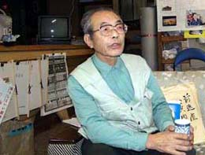
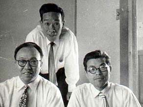

"前進座事件（北海道赤平事件）"を伝える
（聞き取り年月日場所：２００２年１２月７日 滋賀県滋賀郡志賀町 蓑津さん宅）

蓑津巽（みのつ たつみ）さん、昭和３年生まれ。現在は滋賀県在住であるが、昭和２３年から昭和４２
年の閉山までの間、北海道赤平市にあった
豊里炭鉱で坑内夫として働いた経歴を持つ。そこは、生涯において、一番想い出深い所であったという。
その中の一つに、「前進座事件」というものがあった。時は、昭和２７年５月２４日。場所は、北海道赤平市 豊里小学校
体育館。当時、蓑津さんは２３歳。豊里炭鉱労働組合文化部演劇サークルに所属していた。
当時の時代背景として、日本を占領していた米軍マッカーサー元帥指揮のもと、レッドパージが行われていた時であり、国鉄
総裁下山殺人事件（昭和２４年）、国鉄三鷹駅列車暴走事件（昭和２４年）、皇居前広場メーデー事件（昭和２７年）等、血生
臭い事件が頻繁に起きていた時代でもあった。
そんな中で前進座事件があり、蓑津さんは豊里炭鉱労働組合文化部演劇サークルの関係者としてこれに関わりを持つことにな
った。
以下は、そんな蓑津さんからの聞き書きである。
最初からきちっと説明すると２時間もかかります。それでね、今から約５０年前のことですから、そ
の当時は朝鮮戦争（昭和２５年）がおっぱじまってね。その前に赤狩りがあったですよね。炭鉱だけじゃなくて、それぞれの全
職場から共産主義者をすべて追放せよというマッカーサーからの命令でね。それに基づいて日本の炭鉱経営者はね、いたるとこ
ろで共産党系や労働組合の先頭に立っている連中を片っぱしから追放したレッドパージがあったですよ。
したがって、前進座にもその影響があったんですよ。昭和の一ケタ時代にね、前進座の創立者であった河原崎長十郎や中村翫
右衛門（かんえもん）、河原崎国太郎、坂東長衛門、瀬川菊之丞など、まあとにかく、日本の有名な歌舞伎界の役者さんら十何
人かが固まってた集団で、民主的な劇団を創ろうと言って前進座を旗揚げしたという歴史があります。
私、終戦になってヤマ（炭鉱）へ帰ってから聞いた話ですけどね、その時の河原崎長十郎さんはね、日本の歌舞伎界の大御所
である市川団十郎系を受継ぐ人だったですよね。しかし、この歌舞伎界というものはものすごく封建的な世界でね、名門の子に
生まれなければ役者になれないという、なったとしても、セリフがもらえない、ヘタでも大根でもなんでも、名門の子に生まれ
たことによって後継ぎしなければならない、そういう封建的なことでは代表的なものですよね。
ですから、その当時の前進座の人たちは、大変な勇気を持ってその封建制から抜け出して、新しい芝居を創ろうと考えた。ご
多分にもれず、社会主義者というのかな、共産主義者というのかな、戦前の小林多喜二みたいな、そういう思想を持った人たち
の集まりだったのでしょうね。だから戦争中は表に出ることが出来ず地下に潜っていた。そして終戦になってから堂々と前進座
という形で座員も増えるようになって、シロウトも入るようになっていったんですよね。しかしまた、マッカーサーのレッドパ
ージにより、前進座は赤系統と目を付けられ、東京の大きな舞台では芝居が出来なくなってね、いくつかの班に分かれて地方興
行を始めた。前進座というのは武蔵野市に自分らの部落を作ったですよ。給料からなんでもみんなが民主的に配分したりしてね。
昭和２７年でしたかね、中村翫右衛門を座長とする３０人程が北海道にも興行に来て、あっちこっちで弾圧を受けながら、私
たちの豊里小学校にも来たんですよ。その時の主催は豊里炭鉱労働組合だったんですよ。炭鉱という所は全国からの寄せ集まり
で、東京で暮らしていた人もいたんですよ。そういう人たちは特に、東京から前進座が来るということに関心を持っていた。で、
たまたま労働組合が主催して、豊里小学校の体育館で公演することになった。芝居は「俊寛」でした。なぜ小学校の体育館かと
いうと、豊里炭鉱には会館というような福利厚生施設がなかったんですよ。いや実際は、本社の記録からいけば六つの会館等が
建っていることになっていたんですよ。じゃ、それらの金はどうしたんだというと、胃袋が丈夫で、ヤマの経営者が全部飲んで
しまった。それで作れなかった。だから毎週土曜、日曜になると学校の体育館を使って浪花節や民謡があったり、映画会があっ
たり、芝居があったりして日常的に使っていたのが学校の体育館だったんですよね。体育館を作るのに金を出したのは炭鉱の経
営者ですから、市も教育委員会もあまり断ることが出来なかった。なるがゆえに、この事件がおきたんですよ。
そういう理由から豊里小学校の体育館で芝居をするということになって、主催者は豊里炭鉱労働組合。前進座が来れば必ず共
産党が動くから、組合は共産党にクギを刺したんですよ。「労働組合で一切責任を持ってやるから、共産党は政治的な活動は何
もやらないでくれ」と一筆取り交わした。このことは後から知った話ですがね。
前進座の人たちは当時あまり金がなかったので、我々の炭鉱長屋に分宿した。そしてみんなで切符も売ったし舞台も作ったり
食事の支度もしたりして張り切ってやっていたんですよ。
そしたら炭鉱の経営者たちはおもしろくないわけ。共産党系の芝居が来て、そんなものを自由に見せていたら悪影響を及ぼす、
なんとかやめさせる方法はないかと、特定の人間で案を練っていた。しかし、主催者は労働組合になっていたからなかなか思う
ようにならない。そうこうしているうちに公演の日が迫ってきた。切符も８００枚程売れていた。今さらどうにもならない。そ
こで考え出されたのが、教育委員会を動かせということだった。
そこで教育委員会は、豊里小学校の校長を転勤させることを思いついた。そして、その校長の送別会という名目で、主だった
連中を集めた。警察署長とか、もちろん市長だとかね、労働組合の幹部だとか、会社のひも付き、会社の言いなりになる連中を
集めた。そこで作戦会議を開き、その結果、「学校の最高責任者である校長が転勤になって公演当日は不在になるので、体育館
を貸すわけにはいかない」と言うことになって、公演当日の朝になって断ってきたんですよ。労働組合は困ったわけですよね。
今晩芝居をするというのに、朝になってから言ってこられても困ると。
そのことを聞いた共産党がこのままでは前進座の芝居が見られなくなるといって「我々の力で前進座の芝居を勝ち取ろう」と
いうビラを作って配ったわけですよ。そしたら今度は労働組合までもが「共産党がそんな政治的活動をするのなら前進座の芝居
から手を引く」と言い出したんですよ。しかしこりゃ、無責任なやり方ですよね。誰が考えたって。
前進座はたしか前の日に旭川で芝居をやったんですよね。その旭川の前は帯広だったんですよ。その帯広でも同じような目に
あってね。学校の運動場で芝居をやったんですよ。そしたら、消防団が突然現れてきて、消防演習だと言って消防ホースでグラ
ウンドを水浸しにして、いやがらせをしたんですよ。そんないやがらせを受けながらやっとの思いで赤平市にたどり着けば、こ
の始末でしょ。座員も途方に暮れたでしょう。しかし、すでに切符も８００枚程売れていたことから、「よし、最悪の場合は屋
外ででも芝居を観てもらおう。しかし今も学校と交渉中だからもう少し待ってほしい」ということになったんですが、子供たち
は勝手知ったる我が学校の体育館ということで、出入り口の鍵を勝手に開けて早くから中に入り座布団やゴザで場所取りをし、
「まだ入ってはダメだ」というのに体育館は早くに一杯になってしまったんですよ。
そうこうしているうちに青年が一人舞台に立ってね、「学校側はこの体育館を貸さないと言っているが、みんなはどうする？
あきらめて帰るか、それとも、俺たちの税金で建てた学校なのだから、このまま芝居をしてもらうか」と言う者が現れてきて、
それが引き金になって、群集心理も手伝い、「早く芝居を始めろ」ということになり、芝居が始まった。
そしたら会社は電気を切って妨害をしてきた。そうしているうちにね、表で何かザワザワとしてきた。よくよく聞いてみれば、
警官隊が体育館を取り囲んでいるという話がはいってきたわけですよ。「どうする？」となったけども、芝居に影響するといけ
ないのでみんな静かにして最後まで芝居を観、その終わりかかった時にね、青年部の若い者が、「今、警察がここを取り囲んで
いる。このまま外へ出れば弾圧が来るだろうから、座の人たちがメーキャップを落として着替えてからみんなで一斉に出よう」
と観客たちに指示して、役者も私たちも一緒になって外へ出ましたよ。外は真っ暗ですから、誰が役者やらわからない、分宿先
までとにかく無事にたどり着きました。
そして、次の日の公演場所はですね、美唄という所なんですよ。そしたら早朝、赤平駅が警官隊に取り囲まれているという連
絡があった。ですから二班に分かれてね、片方の班は美唄寄りの駅から、もう片方は反対側から茂尻駅を目指して行った。しか
し、そこへ行くには警察署の前を通らなければならない。しかたなくそこを通っていた時、出動していく警官隊のトラックに出
くわしたわけですよ。そのトラックに、道案内役の教頭が乗っていましてね、「あっ！あの人たちが前進座だ」ということにな
って、結局６人が捕まった。
この者らが共同謀議して、学校の体育館の鍵を破ってお客さんを中に入れて芝居をした犯人だということなのですよ。でも、
その人たち６人はその時それぞれの班に分かれて食事をしていたんだからね。よしんば百歩譲ってね、この人たちが中に入って
芝居をやっていたことは事実だから、そういうことでは不法侵入したことになるのかもしれないけど、だとするならば、同じく
中に入ったお客さん約１２００名全員が住居不法侵入ですよね、許可なくして入ったのですから。でもね、むしろ前進座はお客
さんが入ることを止めていたのですからね。そんな形の中で起きたのが前進座事件というヤツです。そこで警察は責任者として
中村翫右衛門を指名手配したんですよ。ところがなかなか逮捕できなかったんですね。その後も各地で芝居は続けられ、ある場
面になるとどこからともなく中村翫右衛門が現れて、芝居が終ったらいつの間にかいなくなるというその繰り返しで、２０何箇
所やった。それでも警察は中村翫右衛門を逮捕出来なかった。
で、前進座最後の公演場所が上砂川炭鉱という所だったんですよ。そこでは街中の一般の劇場でやったんですよね。で、警察
も意地になって捕まえようと。烏の鳴かない日はあっても、全く新聞に書かれない日はなかったんですよね。「きょうは中村翫
右衛門現るか、きょうも逃げたか、と毎日新聞紙上を賑わしたんですよ。そういうことから警察もますます意地になってね。私
らも組合から動員がかかって中村翫右衛門守るため劇場へピケを張りに行った。その日は雨が降っててね。前進座の芝居が始ま
って、そのうちに中村翫右衛門がしずしずと舞台に現れてきた。そしたら、表で張っていた警察が「それっ！中村翫右衛門が現
れた。捕まえろ！」という感じで戸や窓を蹴破って来て、我々と大乱闘が始まったですよ。お客さんがいる中でね。そうして怪
我する人もいたね。そして警察は中村翫右衛門をやっと捕まえて意気揚揚と引揚げて行った。
そしたら今度はお客さんが黙ってはいない。「中村翫右衛門を取り返せ」と全員がデモ行進でワッショイワッショイと警察署
へ向かって行ったんですよ。
一方、警察では、「中村翫右衛門、白状せえ」と取調べが行われていたようですが、「いや、私は中村翫右衛門ではない」と
いうことになったんだね。後で本人から聞いた話ですが、メーキャップを落として見せたら違う人物だった。瀬川菊之丞さんだ
ったんですよ。警察はまたしてもやられたんですね。

そういうことから中村翫右衛門さんはやむなくその足で中国へ亡命した。中国に３年と６ヶ月いたのかな。そして中村翫右衛
門を守る会みたいなものを作ってね。会長に、当時の衆議院議長がなってね。弁護団を組織してね。中村翫右衛門を中国から呼
び戻せという運動をしたわけですよ。私もその時特別弁護人として法廷に立ったこともありました。結果、中村翫右衛門さん（
写真左側の人）は執行猶予でした。
最近県内で、この前進座事件を劇にしてみんなに観てもらおうという動きがあるようです。もう、５０年も前の話なのに、現
在に通じる何かがあるのでしょうかね。
（参考）
中村翫右衛門は、この時の公演の思い出として、「芸話 おもちゃ箱」（１９８２年９月朝日新聞社発行）という本の中で、
「この事件が起きたことで私は俊寛という役の気持がより掴めたということもまた、事実でありました。・・・舞台をつとめ終
えると即座に消えていなくなる、仲間の座員たちは「捕まったのか・・・」と心配する、私自身も、次の舞台へ出る瞬間までは、
出られるか出られないかわからない。瀬川菊之丞君も「きょうは代役をつとめるのだろうか・・・」と思っていると、私の声が
聞こえてきた、「あっ、来た！」・・・そして舞台へ登場。観客も「ああ、やっぱり翫右衛門がやっている、よかった・・・」
という。すると、平判官康頼役の水戸部君が登場して「このじゅうは逢いませぬが、ご無事でござりましたか」。丹波少将成経
「変わることもござりませぬか・・・」というわけで、その台詞にも互いに実感がこもる。また流人たちの清盛に対する怒りが、
この公演をぶちこわそうとする権力の無理解に対する憎しみと一体になり、それが観客と交流していく・・。舞台で船は出て行
く、俊寛は一人孤島に残され、「互いに未来で、未来で」と叫びながら別れを告げる・・・こうした激しい体験を、雰囲気とし
て再現しようとしてもできるものではありません。亡妻の春子にも、そそくさと別れを告げ、別れの気持だけが胸に残って、「
春子＝俊寛の妻・東屋」というダブルイメージとなる、・・・という具合で、ちょうど私という一俳優の境遇が俊寛の境遇と重
なり合って、知らず知らずに舞台の迫力をつくりあげていたのです。」と語っている。
BACK
|